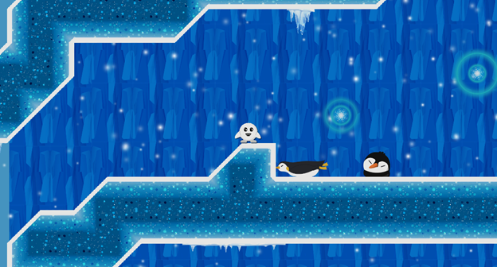
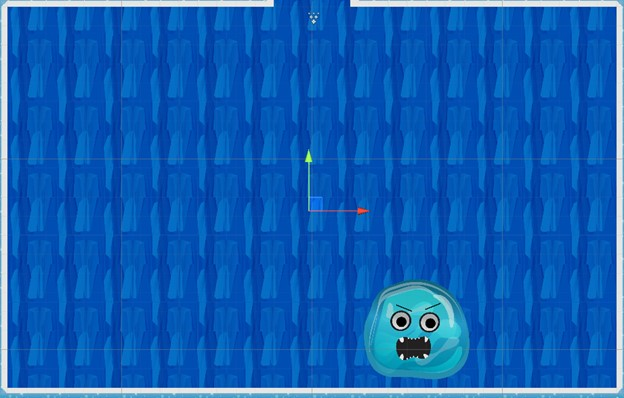

| Capstone Progress Week 9 |
This week, we focused on pushing out two polished levels for our vertical slice.
A vertical slice is used to show off what the final product of your game might look like.
This meant that we had to implement some assets that were left untouched for a while, fix a bunch of bugs, and tweak some mechanics.
I started off by implementing a scrolling cave background that Joana made for us.
Being in a cave section now feels dark and dangerous compared to the open atmosphere of the trees and mountains in the outside sections.
I got to play with Unity’s particle system a little and added a snow effect to the scene. I really like how this turned out.
I’ve also added some icicle decorations to the cave.
Finally, I’ve implemented the ability to be teleported to the last check point if a player falls out of the map.

I then moved on to working on some bug fixing.
An issue that has been present in the game since the beginning was that players were able to jump off the same bullet
multiple times and gain an infinite amount of combo.
This took longer than I thought to fix but I managed resolve this by comparing the first parry object to the previous
parry object and disabling a bool on the object itself. These bools reset when the player hits the ground or parries another object.
The next bug I fixed involved the boss camera switching code I wrote for the prototype.
In the previous version, the camera would teleport to the boss arena and be resized to fit it.
The issue here was that the teleport value was a set value for the scene, meaning in other scenes, the camera would teleport to a random location.
I’ve added a public transform object to the script that holds the arena location, allowing the code to be re used for other scenes.

I worked with Hyangsu to squash the last few bugs.
When I added the transition between scenes, sometimes the object would block input to UI buttons.
All we had to do was uncheck a box that would block ray casts.
The next issue was the boss health bar not updating when the player would damage it.
To fix this, we had to re assign the sprite for the bar to the boss script.
We also went through the boss script and tried to figure out why the boss would de activate in some cases.
It turned out that this would happen when the boss was considered out of range of the player.
To fix this we simply increased the boss and player range check.
With all these fixes and features in place, it’s safe to say that we have a pretty good idea of how we will be developing the rest of the levels. We will continue with the two levels per sprint workflow, the next being the desert, and have a final week for bug fixes and playtesting. |
|---|